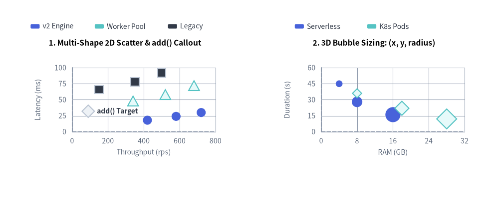
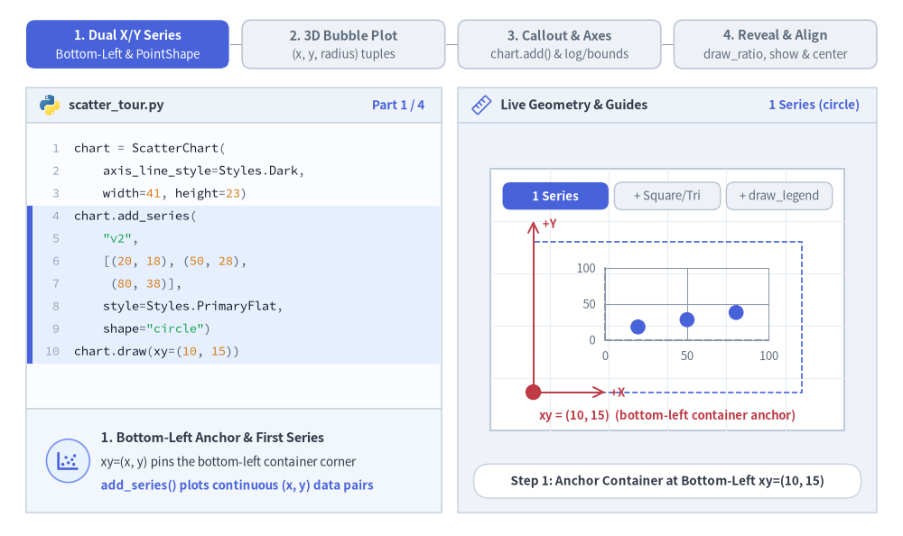
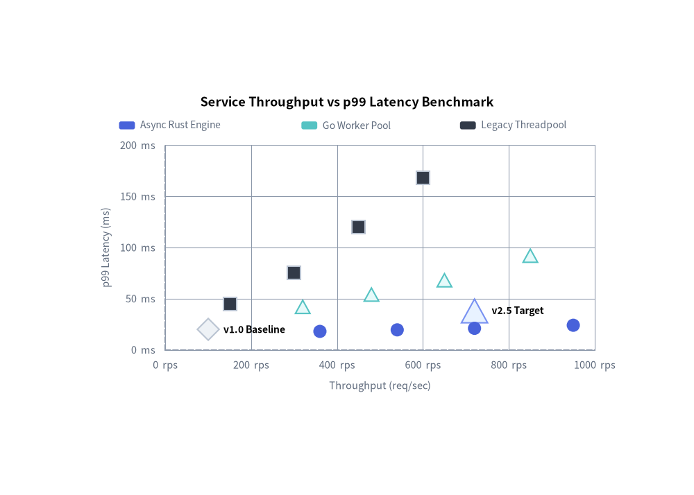
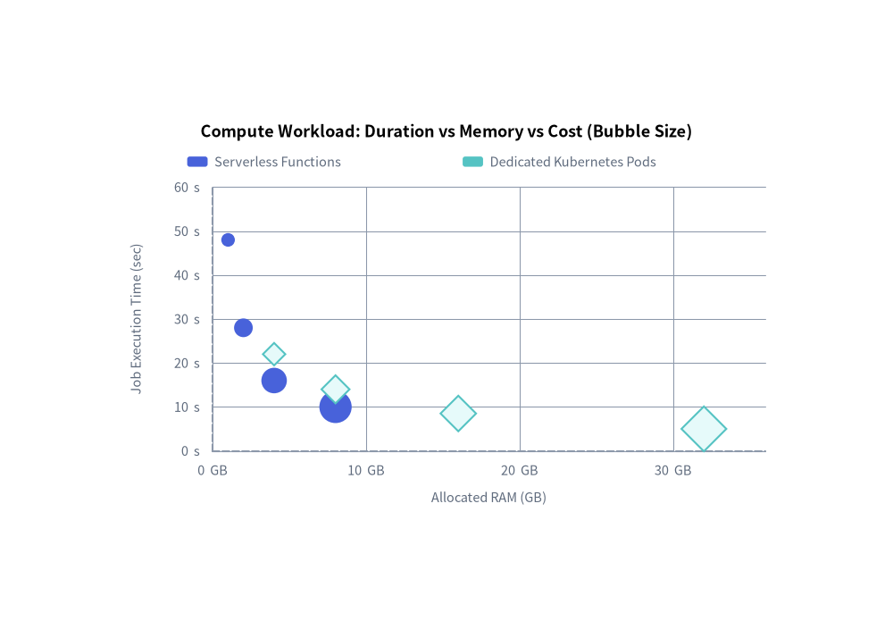

ScatterChart: Dual-Axis Plots & Multidimensional Bubble Charts
ScatterChart (drawlib.charts.scatter) plots continuous numerical data across dual Cartesian axes (X and Y). It is ideal for identifying statistical correlations, clustering patterns, latency vs. throughput trade-offs, and 3D bubble analysis (where marker radius encodes a third numerical variable).

Source Code
from drawlib.canvas import save, setup
from drawlib.charts.scatter import ScatterChart
from drawlib.styles import Styles
setup(width=132, height=55)
# Left: 2D Scatter with Multiple PointShapes & add() Callout
scatter_2d = ScatterChart(
axis_line_style=Styles.MutedDashed,
axis_text_style=Styles.Muted.patch(text_size=10.0),
value_text_style=Styles.DarkBold.patch(text_size=10.0),
grid_style=Styles.MutedThin,
width=58.0,
height=38.0,
title="1. Multi-Shape 2D Scatter & add() Callout",
title_style=Styles.BlackBold.patch(text_size=11.0),
)
scatter_2d.configure_x_axis(label="Throughput (rps)", min_value=0, max_value=800, tick_step=200)
scatter_2d.configure_y_axis(label="Latency (ms)", min_value=0, max_value=100, tick_step=25)
scatter_2d.add(xy=(90, 32), style=Styles.Neutral, radius=1.5, shape="rhombus", label="add() Target")
scatter_2d.add_series("v2 Engine", [(420, 18), (580, 24), (720, 30)], style=Styles.PrimaryFlat, shape="circle", radius=1.2)
scatter_2d.add_series("Worker Pool", [(340, 48), (520, 58), (680, 72)], style=Styles.SecondaryNeutral, shape="triangle", radius=1.3)
scatter_2d.add_series("Legacy", [(150, 66), (350, 78), (500, 92)], style=Styles.Dark, shape="square", radius=1.1)
scatter_2d.draw(xy=(4.0, 8.0))
scatter_2d.draw_legend(xy=(8.0, 48.0), text_style=Styles.Dark.patch(text_size=10.0), orientation="horizontal", item_gap=3.0)
# Right: 3D Proportional Bubble Plot (x, y, radius)
bubble_3d = ScatterChart(
axis_line_style=Styles.MutedDashed,
axis_text_style=Styles.Muted.patch(text_size=10.0),
grid_style=Styles.MutedThin,
width=58.0,
height=38.0,
title="2. 3D Bubble Sizing: (x, y, radius)",
title_style=Styles.BlackBold.patch(text_size=11.0),
)
bubble_3d.configure_x_axis(label="RAM (GB)", min_value=0, max_value=32, tick_step=8)
bubble_3d.configure_y_axis(label="Duration (s)", min_value=0, max_value=60, tick_step=15)
bubble_3d.add_series(
"Serverless",
[(4, 45, 0.9), (8, 28, 1.4), (16, 16, 2.0)],
style=Styles.PrimaryFlat,
shape="circle",
)
bubble_3d.add_series(
"K8s Pods",
[(8, 36, 1.1), (18, 22, 1.7), (28, 12, 2.4)],
style=Styles.SecondaryNeutral,
shape="rhombus",
)
bubble_3d.draw(xy=(70.0, 8.0))
bubble_3d.draw_legend(xy=(78.0, 48.0), text_style=Styles.Dark.patch(text_size=10.0), orientation="horizontal", item_gap=4.0)
save()
1. Core Concepts & Basic Usage
ScatterChart plots continuous numerical data across independent X and Y axes, anchoring by default at the Bottom-Left (x, y) corner of its container (or centered via align="center"). You can register multi-shape runs with .add_series(...), encode a third metric into marker radii using (x, y, radius) 3-tuples, pinpoint standalone outliers via .add(...), tune linear or logarithmic axes, and animate progressive reveals via draw_ratio and show:

Source Code
from __future__ import annotations
from drawlib.anim import Animation
from drawlib.canvas import save, setup
from drawlib.charts.scatter import ScatterChart
from drawlib.icons import code as code_icons
from drawlib.icons import phosphor
from drawlib.lines import line
from drawlib.shapes import circle, rectangle
from drawlib.smartarts import SourceCode, SourceCodeStyles
from drawlib.styles import Styles
from drawlib.text import text
W, H = 138.0, 82.0
setup(width=W, height=H)
anim = Animation(fps=10.0, loop=0)
CODE_TEXT_SIZE = 10.0
PT_TO_CANVAS = W / 720.0
FONT_CANVAS = CODE_TEXT_SIZE * PT_TO_CANVAS
LINE_H = FONT_CANVAS * 1.8
PAD_Y = FONT_CANVAS * 1.2
CODE_STYLES = SourceCodeStyles.get("default", font_lang="en", text_size=CODE_TEXT_SIZE).patch(
box_style=Styles.Neutral.patch(shape_fill_color=(0, 0, 0, 0), shape_line_width=0),
)
PANE_HEADER = Styles.Neutral.patch(
shape_fill_color=(238, 243, 250),
shape_line_color=(203, 213, 225),
shape_line_width=1.2,
shape_r=0.0,
)
EDITOR_BODY = Styles.Neutral.patch(
shape_fill_color=(250, 252, 255),
shape_line_color=(203, 213, 225),
shape_line_width=1.2,
shape_r=0.0,
)
TAKEAWAY_BODY = Styles.Neutral.patch(
shape_fill_color=(242, 246, 253),
shape_line_color=(203, 213, 225),
shape_line_width=1.2,
shape_r=0.0,
)
STUDIO_BODY = Styles.Neutral.patch(
shape_fill_color=(239, 243, 249),
shape_line_color=(203, 213, 225),
shape_line_width=1.2,
shape_r=0.0,
)
PART_ITEMS = [
("1. Dual X/Y Series", "Bottom-Left & PointShape"),
("2. 3D Bubble Plot", "(x, y, radius) tuples"),
("3. Callout & Axes", "chart.add() & log/bounds"),
("4. Reveal & Align", "draw_ratio, show & center"),
]
def draw_step_bar(active_part: int) -> None:
"""Draw top 4-part progress bar (active_part is 1..4)."""
pill_w = 31.0
pill_h = 7.4
gap = 2.0
start_x = 4.0 + pill_w / 2.0
cy = 75.2
for idx, (label, sublabel) in enumerate(PART_ITEMS, start=1):
cx = start_x + (idx - 1) * (pill_w + gap)
if idx > 1:
prev_cx = cx - (pill_w + gap)
line(
(prev_cx + pill_w / 2.0 + 0.2, cy),
(cx - pill_w / 2.0 - 0.2, cy),
style=Styles.PrimaryBold if idx <= active_part else Styles.MutedThin,
)
if idx == active_part:
st = Styles.PrimaryFlat.patch(shape_r=1.4)
tst = Styles.WhiteBold.patch(text_size=10.3)
sub_tst = Styles.White.patch(text_size=9.5)
elif idx < active_part:
st = Styles.PrimaryNeutral.patch(shape_r=1.4, shape_line_width=1.1)
tst = Styles.PrimaryBold.patch(text_size=10.3)
sub_tst = Styles.Primary.patch(text_size=9.5)
else:
st = Styles.Neutral.patch(shape_r=1.4, shape_line_width=1.1)
tst = Styles.MutedBold.patch(text_size=10.3)
sub_tst = Styles.Muted.patch(text_size=9.5)
rectangle((cx, cy), width=pill_w, height=pill_h, style=st)
text((cx, cy + 1.35), label, style=tst)
text((cx, cy - 1.55), sublabel, style=sub_tst)
def draw_left_pane(
active_part: int,
code_lines: list[str],
hl_range: tuple[int, int],
icon_fn: object,
summary_title: str,
summary_line1: str,
summary_line2: str,
) -> None:
"""Draw left Python code editor + bottom concept takeaway card."""
x0, w = 4.0, 63.5
cx = x0 + w / 2.0
top_y = 63.2
header_h = 5.4
editor_h = 43.8
takeaway_h = 15.8
rectangle((cx, top_y + header_h / 2.0), width=w, height=header_h, style=PANE_HEADER)
code_icons.python((x0 + 3.6, top_y + header_h / 2.0), width=3.4, style=Styles.Neutral)
text(
(x0 + 6.5, top_y + header_h / 2.0),
"scatter_tour.py",
style=Styles.DarkBold.patch(text_size=10.2, halign="left"),
)
text(
(x0 + w - 2.6, top_y + header_h / 2.0),
f"Part {active_part} / 4",
style=Styles.PrimaryBold.patch(text_size=9.8, halign="right"),
)
rectangle((cx, top_y - editor_h / 2.0), width=w, height=editor_h, style=EDITOR_BODY)
hl_start, hl_end = hl_range
hl_top = top_y - PAD_Y - hl_start * LINE_H
hl_bot = top_y - PAD_Y - (hl_end + 1) * LINE_H
hl_cy = (hl_top + hl_bot) / 2.0
hl_h = hl_top - hl_bot
rectangle(
(cx, hl_cy),
width=w - 0.6,
height=hl_h,
style=Styles.Neutral.patch(shape_fill_color=(229, 239, 255), shape_line_width=0),
)
rectangle(
(x0 + 0.55, hl_cy),
width=0.9,
height=hl_h,
style=Styles.PrimaryFlat.patch(shape_line_width=0),
)
SourceCode.draw(
xy=(x0, top_y),
width=w,
code="\n".join(code_lines),
styles=CODE_STYLES,
code_lang="python",
show_linenum=True,
align="top_left",
)
take_cy = 3.6 + takeaway_h / 2.0
rectangle((cx, take_cy), width=w, height=takeaway_h, style=TAKEAWAY_BODY)
circle(
(x0 + 6.4, take_cy),
radius=3.3,
style=Styles.PrimaryNeutral.patch(shape_line_width=1.2),
)
icon_fn((x0 + 6.4, take_cy), width=3.8, style=Styles.PrimaryBold) # type: ignore[operator]
text(
(x0 + 11.4, take_cy + 3.6),
summary_title,
style=Styles.DarkBold.patch(text_size=10.4, halign="left"),
)
text(
(x0 + 11.4, take_cy - 0.2),
summary_line1,
style=Styles.Dark.patch(text_size=9.7, halign="left"),
)
text(
(x0 + 11.4, take_cy - 3.8),
summary_line2,
style=Styles.PrimaryBold.patch(text_size=9.6, halign="left"),
)
def draw_geometry_studio(param_badge: str, footer_caption: str) -> tuple[float, float]:
"""Draw right geometry lab shell, inner coordinate sheet with subtle grid, and footer."""
x0, w = 70.0, 64.0
cx = x0 + w / 2.0
top_y = 63.2
header_h = 5.4
body_h = 59.6
rectangle((cx, top_y + header_h / 2.0), width=w, height=header_h, style=PANE_HEADER)
phosphor.ruler((x0 + 3.6, top_y + header_h / 2.0), width=3.4, style=Styles.Primary)
text(
(x0 + 6.5, top_y + header_h / 2.0),
"Live Geometry & Guides",
style=Styles.DarkBold.patch(text_size=10.2, halign="left"),
)
text(
(x0 + w - 2.6, top_y + header_h / 2.0),
param_badge,
style=Styles.PrimaryBold.patch(text_size=9.6, halign="right"),
)
rectangle((cx, 3.6 + body_h / 2.0), width=w, height=body_h, style=STUDIO_BODY)
sheet_cx, sheet_cy = cx, 36.2
sheet_w, sheet_h = 54.0, 40.0
sx0, sy0 = sheet_cx - sheet_w / 2.0, sheet_cy - sheet_h / 2.0
rectangle(
(sheet_cx, sheet_cy),
width=sheet_w,
height=sheet_h,
style=Styles.Neutral.patch(
shape_fill_color=(255, 255, 255),
shape_line_color=(180, 194, 214),
shape_line_width=1.2,
),
)
g_st = Styles.MutedThin.patch(line_color=(232, 238, 246), line_width=0.8)
for gx in range(1, 6):
vx = sx0 + gx * (sheet_w / 6.0)
line((vx, sy0), (vx, sy0 + sheet_h), style=g_st)
for gy in range(1, 5):
vy = sy0 + gy * (sheet_h / 5.0)
line((sx0, vy), (sx0 + sheet_w, vy), style=g_st)
rectangle(
(cx, 8.4),
width=59.2,
height=5.2,
style=Styles.Neutral.patch(
shape_fill_color=(255, 255, 255),
shape_line_color=(203, 213, 225),
shape_line_width=1.1,
shape_r=2.4,
),
text=footer_caption,
text_style=Styles.DarkBold.patch(text_size=9.8),
)
return sheet_cx, sheet_cy
def draw_sub_pills(scx: float, labels: list[str], active_idx: int) -> None:
"""Draw 3-step tracker pills near the top of the studio sheet."""
pw, ph, pgap = 16.2, 4.2, 0.9
p_start = scx - (3 * pw + 2 * pgap) / 2.0 + pw / 2.0
for idx, lbl in enumerate(labels):
px = p_start + idx * (pw + pgap)
if idx == active_idx:
pst = Styles.PrimaryFlat.patch(shape_r=1.2)
ptst = Styles.WhiteBold.patch(text_size=9.5)
elif idx < active_idx:
pst = Styles.PrimaryNeutral.patch(shape_r=1.2, shape_line_width=1.0)
ptst = Styles.PrimaryBold.patch(text_size=9.5)
else:
pst = Styles.Neutral.patch(shape_r=1.2, shape_line_width=1.0)
ptst = Styles.Muted.patch(text_size=9.5)
rectangle((px, 52.0), width=pw, height=ph, style=pst, text=lbl, text_style=ptst)
AXIS_TEXT = Styles.Muted.patch(text_size=9.5)
LEGEND_TEXT = Styles.DarkBold.patch(text_size=9.5)
# =========================================================================
# Part 1: Dual X/Y Series — Bottom-Left xy Anchor, PointShape & Legend
# =========================================================================
SERIES_STATES = [
(
1,
3.3,
[
"chart = ScatterChart(",
" axis_line_style=Styles.Dark,",
" width=41, height=23)",
"chart.add_series(",
' "v2",',
" [(20, 18), (50, 28),",
" (80, 38)],",
" style=Styles.PrimaryFlat,",
' shape="circle")',
"chart.draw(xy=(10, 15))",
],
(3, 9),
"1 Series (circle)",
"Step 1: Anchor Container at Bottom-Left xy=(10, 15)",
"1. Bottom-Left Anchor & First Series",
"xy=(x, y) pins the bottom-left container corner",
"add_series() plots continuous (x, y) data pairs",
),
(
2,
3.3,
[
"chart = ScatterChart(",
" ..., width=41, height=23)",
'chart.add_series("v2", ...,',
' shape="circle")',
"chart.add_series(",
' "Pool", [(25, 48), ...],',
' shape="triangle",',
" style=Styles.Neutral)",
'chart.add_series("v1", ...,',
' shape="square")',
"chart.draw(xy=(10, 15))",
],
(4, 9),
'shape="triangle"',
"Step 2: Add Multi-Shape Series (circle, triangle, square)",
"2. Distinct Marker Shapes (PointShape)",
"Pick circle, triangle, square, or rhombus",
"Calm neutral series keep 1 focal run prominent",
),
(
3,
3.4,
[
"chart = ScatterChart(...)",
'chart.add_series("v2", ...,',
' shape="circle")',
'chart.add_series("Pool", ...,',
' shape="triangle")',
'chart.add_series("v1", ...,',
' shape="square")',
"chart.draw(xy=(10, 15))",
"chart.draw_legend(",
" xy=(14, 40),",
' orientation="horizontal")',
],
(8, 10),
"draw_legend()",
"Step 3: Place Decoupled Legend at Explicit xy=(14, 40)",
"3. Decoupled Legend Placement",
"draw_legend(xy, ...) places swatches at any xy",
'Supports "horizontal" or "vertical" orientation',
),
]
for p1_idx, (mode_p1, dur, code_1, hl_rng, badge_txt, foot_txt, s_t, s_1, s_2) in enumerate(SERIES_STATES):
with anim.frame(duration=dur):
draw_step_bar(1)
draw_left_pane(1, code_1, hl_rng, phosphor.chart_scatter, s_t, s_1, s_2)
scx, _ = draw_geometry_studio(badge_txt, foot_txt)
draw_sub_pills(scx, ["1 Series", "+ Square/Tri", "+ draw_legend"], p1_idx)
bx, by, cw, ch = 81.5, 22.0, 41.0, 23.0
chart = ScatterChart(
axis_line_style=Styles.MutedDashed,
axis_text_style=AXIS_TEXT,
grid_style=Styles.MutedThin,
width=cw,
height=ch,
)
chart.configure_x_axis(min_value=0, max_value=100, tick_step=50)
chart.configure_y_axis(min_value=0, max_value=100, tick_step=50)
chart.add_series(
"v2",
[(20, 18), (50, 28), (80, 38)],
style=Styles.PrimaryFlat,
shape="circle",
radius=1.15,
)
if mode_p1 >= 2:
chart.add_series(
"Pool",
[(25, 48), (55, 62), (85, 74)],
style=Styles.SecondaryNeutral,
shape="triangle",
radius=1.25,
)
chart.add_series(
"v1",
[(15, 68), (45, 80), (75, 92)],
style=Styles.PrimaryNeutral,
shape="square",
radius=1.1,
)
chart.draw(xy=(bx, by))
if mode_p1 == 1:
rectangle(
(bx + cw / 2.0, by + ch / 2.0),
width=cw,
height=ch,
style=Styles.PrimaryDashed.patch(shape_fill_color=(0, 0, 0, 0), shape_line_width=1.2),
)
line((bx, by), (bx, by + ch + 3.2), arrow_head="->", style=Styles.DangerBold.patch(line_width=1.4))
text((bx + 1.4, by + ch + 2.8), "+Y", style=Styles.DangerBold.patch(text_size=9.5, halign="left"))
line((bx, by), (bx + 11.0, by), arrow_head="->", style=Styles.DangerBold.patch(line_width=1.4))
text((bx + 11.8, by), "+X", style=Styles.DangerBold.patch(text_size=9.5, halign="left"))
circle((bx, by), radius=1.2, style=Styles.DangerFlat)
text(
(scx, 18.4),
"xy = (10, 15) (bottom-left container anchor)",
style=Styles.DangerBold.patch(text_size=9.5),
)
elif mode_p1 == 2:
text(
(scx, 18.4),
"3 PointShape series: circle • triangle • square",
style=Styles.PrimaryBold.patch(text_size=9.5),
)
else:
chart.draw_legend(
xy=(bx + 6.5, 47.0),
text_style=LEGEND_TEXT,
orientation="horizontal",
item_gap=3.4,
)
text(
(scx, 18.4),
"Decoupled legend anchored above plot at (14, 40)",
style=Styles.PrimaryBold.patch(text_size=9.5),
)
# =========================================================================
# Part 2: 3D Bubble Plot — Encoding a 3rd Variable via (x, y, radius)
# =========================================================================
BUBBLE_STATES = [
(
"fixed_2d",
3.3,
[
"chart = ScatterChart(",
" ..., width=41, height=23)",
"",
"# 2-tuples: fixed marker radius",
"chart.add_series(",
' "Fn",',
" [(2, 46), (5, 28), (8, 16)],",
" style=Styles.PrimaryNeutral,",
" radius=1.1)",
"chart.draw(xy=(10, 15))",
],
(4, 8),
"2-tuple (x, y)",
"2-Tuples (x, y): Every Point Uses Uniform radius=1.1",
"Standard 2-Tuple Data ((x, y))",
"2-tuples share the series default radius",
"Shows X/Y position without a 3rd size dimension",
),
(
"bubble_single",
3.3,
[
"chart = ScatterChart(",
" ..., width=41, height=23)",
"",
"# 3-tuples: (x, y, radius)",
"chart.add_series(",
' "Fn",',
" [(2, 40, 0.9), (5, 26, 1.5),",
" (8, 15, 2.2)],",
" style=Styles.PrimaryNeutral)",
"chart.draw(xy=(10, 15))",
],
(4, 8),
"(x, y, radius)",
"3-Tuples (x, y, r): Marker Radius Encodes 3rd Variable",
"3-Tuple Bubble Sizing ((x, y, r))",
"3rd tuple item sets each point's marker radius",
"Encodes cost, traffic, or memory footprint",
),
(
"bubble_multi",
3.4,
[
"chart = ScatterChart(...)",
'chart.add_series("Fn",',
" [(2, 42, 0.9), (5, 26, 1.5),",
" (8, 15, 2.1)],",
" style=Styles.PrimaryNeutral)",
'chart.add_series("Pods",',
" [(3, 34, 1.1), (6, 20, 1.7),",
" (9, 12, 2.4)],",
' shape="rhombus", ...)',
"chart.draw(xy=(10, 15))",
"chart.draw_legend((14, 40), ...)",
],
(5, 8),
"Multi-Bubble",
"Translucent Neutral Fills Keep Multi-Series Bubbles Clear",
"Multi-Series Translucent Bubbles",
"Translucent neutral fills prevent occlusion",
"Combine shapes + bubble radii for 4D plots",
),
]
for p2_idx, (mode_p2, dur, code_2, hl_rng, badge_txt, foot_txt, s_t, s_1, s_2) in enumerate(BUBBLE_STATES):
with anim.frame(duration=dur):
draw_step_bar(2)
draw_left_pane(2, code_2, hl_rng, phosphor.circles_three, s_t, s_1, s_2)
scx, _ = draw_geometry_studio(badge_txt, foot_txt)
draw_sub_pills(scx, ["2D Fixed r", "3-Tuple (x,y,r)", "Multi-Bubble"], p2_idx)
bx, by, cw, ch = 81.5, 22.0, 41.0, 23.0
chart = ScatterChart(
axis_line_style=Styles.MutedDashed,
axis_text_style=AXIS_TEXT,
grid_style=Styles.MutedThin,
width=cw,
height=ch,
)
chart.configure_x_axis(min_value=0, max_value=10, tick_step=5)
chart.configure_y_axis(min_value=0, max_value=60, tick_step=30)
if mode_p2 == "fixed_2d":
chart.add_series(
"Fn",
[(2, 46), (5, 28), (8, 16)],
style=Styles.PrimaryNeutral,
shape="circle",
radius=1.1,
)
chart.draw(xy=(bx, by))
text(
(scx, 18.4),
"Uniform radius = 1.1 across all points",
style=Styles.DarkBold.patch(text_size=9.5),
)
elif mode_p2 == "bubble_single":
pts_b = [(2.0, 40.0, 0.9), (5.0, 26.0, 1.5), (8.0, 15.0, 2.2)]
chart.add_series("Fn", pts_b, style=Styles.PrimaryNeutral, shape="circle")
chart.draw(xy=(bx, by))
p_min_x, p_min_y, plot_w, plot_h = bx + 11.0, by + 8.0, cw - 16.0, ch - 12.0
for xv, yv, rv in pts_b:
px_b = p_min_x + (xv / 10.0) * plot_w
py_b = p_min_y + (yv / 60.0) * plot_h
line(
(px_b, py_b + rv + 0.35),
(px_b, 42.3),
style=Styles.PrimaryDashed.patch(line_width=0.9),
)
text(
(px_b, 43.6),
f"r={rv}",
style=Styles.PrimaryBold.patch(text_size=9.5),
)
text(
(scx, 18.4),
"Per-point radius encodes 3rd metric (0.9 -> 1.5 -> 2.2)",
style=Styles.PrimaryBold.patch(text_size=9.5),
)
else:
chart.add_series(
"Fn",
[(2, 42, 0.9), (5, 26, 1.5), (8, 15, 2.1)],
style=Styles.PrimaryNeutral,
shape="circle",
)
chart.add_series(
"Pods",
[(3, 34, 1.1), (6, 20, 1.7), (9, 12, 2.4)],
style=Styles.SecondaryNeutral,
shape="rhombus",
)
chart.draw(xy=(bx, by))
chart.draw_legend(
xy=(bx + 9.0, 47.0),
text_style=LEGEND_TEXT,
orientation="horizontal",
item_gap=4.5,
)
text(
(scx, 18.4),
"Calm neutral fills preserve clarity on overlapping bubbles",
style=Styles.PrimaryBold.patch(text_size=9.5),
)
# =========================================================================
# Part 3: Callout & Axes — chart.add() & Axis Bounds / Log Scale
# =========================================================================
AXIS_STATES = [
(
"callout",
3.3,
[
"chart = ScatterChart(...)",
'chart.add_series("v2", ...)',
'chart.add_series("Pool", ...)',
"",
"# Standalone target / outlier",
"chart.add(",
" (60, 82),",
" style=Styles.DangerFlat,",
' shape="rhombus", radius=1.3,',
' label="SLA")',
"chart.draw(xy=(10, 15))",
],
(5, 9),
"chart.add()",
'chart.add(): Pinpoint Outlier/Target with Inline "SLA" Label',
"Standalone Point Callout (chart.add())",
"Plots a single (x, y) point outside series",
"Draws inline label without adding a legend row",
),
(
"bounds",
3.3,
[
"chart = ScatterChart(...)",
"chart.configure_x_axis(",
" min_value=0, max_value=100,",
" tick_step=25)",
"chart.configure_y_axis(",
" min_value=0, max_value=100,",
' tick_step=25, unit="ms")',
"chart.add((60, 82), ...,",
' label="SLA")',
'chart.add_series("v2", ...)',
"chart.draw(xy=(10, 15))",
],
(1, 6),
'unit = "ms"',
"configure_x/y_axis: Explicit Bounds, tick_step & Unit Suffix",
"Linear Bounds, Ticks & Units",
"Lock min_value, max_value, and tick_step=25",
'unit="ms" appends suffix to every Y-axis tick',
),
(
"log_scale",
3.4,
[
"chart = ScatterChart(...)",
"# Logarithmic decade X-axis",
"chart.configure_x_axis(",
' scale="log",',
" min_value=10, max_value=1000,",
" ticks=[10, 100, 1000])",
'chart.configure_y_axis(unit="ms")',
"chart.add((250, 82), ...,",
' label="SLA")',
'chart.add_series("v2", ...)',
"chart.draw(xy=(10, 15))",
],
(2, 5),
'scale = "log"',
'scale="log": Equal Decade Spacing Across 10 -> 100 -> 1000',
'Logarithmic Scale (scale="log")',
"Spaces powers of 10 evenly along X or Y axis",
"Ideal for multi-decade load or latency spans",
),
]
for p3_idx, (mode_p3, dur, code_3, hl_rng, badge_txt, foot_txt, s_t, s_1, s_2) in enumerate(AXIS_STATES):
with anim.frame(duration=dur):
draw_step_bar(3)
draw_left_pane(3, code_3, hl_rng, phosphor.crosshair, s_t, s_1, s_2)
scx, _ = draw_geometry_studio(badge_txt, foot_txt)
draw_sub_pills(scx, ["chart.add()", "Bounds & Unit", 'scale="log"'], p3_idx)
bx, by, cw, ch = 81.5, 22.0, 41.0, 23.0
chart = ScatterChart(
axis_line_style=Styles.MutedDashed,
axis_text_style=AXIS_TEXT,
value_text_style=Styles.DangerBold.patch(text_size=9.5),
grid_style=Styles.MutedThin,
width=cw,
height=ch,
)
if mode_p3 == "callout":
chart.configure_x_axis(min_value=0, max_value=100, tick_step=50)
chart.configure_y_axis(min_value=0, max_value=100, tick_step=50)
chart.add_series("v2", [(20, 22), (50, 32), (80, 42)], style=Styles.PrimaryNeutral, radius=1.1)
chart.add_series(
"Pool",
[(25, 46), (55, 58), (85, 68)],
style=Styles.SecondaryNeutral,
shape="triangle",
radius=1.2,
)
chart.add((60, 82), style=Styles.DangerFlat, shape="rhombus", radius=1.3, label="SLA")
chart.draw(xy=(bx, by))
text(
(scx, 18.4),
'Standalone chart.points[0] callout ("SLA" rhombus)',
style=Styles.DangerBold.patch(text_size=9.5),
)
elif mode_p3 == "bounds":
chart.configure_x_axis(min_value=0, max_value=100, tick_step=25)
chart.configure_y_axis(min_value=0, max_value=100, tick_step=25, unit="ms")
chart.add_series("v2", [(20, 22), (50, 32), (80, 42)], style=Styles.PrimaryNeutral, radius=1.1)
chart.add_series(
"Pool",
[(25, 46), (55, 58), (85, 68)],
style=Styles.SecondaryNeutral,
shape="triangle",
radius=1.2,
)
chart.add((60, 82), style=Styles.DangerFlat, shape="rhombus", radius=1.3, label="SLA")
chart.draw(xy=(bx, by))
text(
(scx, 18.4),
'tick_step=25 on X/Y + unit="ms" on Y ticks',
style=Styles.PrimaryBold.patch(text_size=9.5),
)
else:
chart.configure_x_axis(scale="log", min_value=10, max_value=1000, ticks=[10, 100, 1000])
chart.configure_y_axis(min_value=0, max_value=100, tick_step=50, unit="ms")
chart.add_series("v2", [(12, 20), (80, 32), (700, 46)], style=Styles.PrimaryNeutral, radius=1.1)
chart.add_series(
"Pool",
[(20, 42), (160, 58), (850, 72)],
style=Styles.SecondaryNeutral,
shape="triangle",
radius=1.2,
)
chart.add((250, 82), style=Styles.DangerFlat, shape="rhombus", radius=1.3, label="SLA")
chart.draw(xy=(bx, by))
text(
(scx, 18.4),
'Log10 X-axis: 10, 100, 1000 spaced equally',
style=Styles.PrimaryBold.patch(text_size=9.5),
)
# =========================================================================
# Part 4: Reveal & Align — draw_ratio, s2.show=False & align="center"
# =========================================================================
REVEAL_STATES = [
(
"ratio",
3.3,
[
"chart = ScatterChart(...)",
"s1 = chart.add_series(",
' "v2", data_v2,',
" style=Styles.PrimaryFlat,",
" draw_ratio=0.6)",
"s2 = chart.add_series(",
' "v1", data_v1,',
' shape="square",',
" draw_ratio=0.6)",
"chart.draw(xy=(10, 15))",
],
(4, 8),
"draw_ratio = 0.6",
"draw_ratio=0.6: Progressive Left-to-Right X-Range Reveal",
"Progressive Spatial Reveal (draw_ratio)",
"Reveals points up to 60% of the X-axis range",
"Axis bounds stay fixed across animation frames",
),
(
"hide_series",
3.4,
[
"chart = ScatterChart(...)",
's1 = chart.add_series("v2", ...)',
's2 = chart.add_series("v1", ...)',
"",
"# Hide series; X/Y axes stay!",
"s2.show = False",
"",
"chart.draw(xy=(10, 15))",
"chart.draw_legend((14, 40), ...)",
],
(4, 5),
"s2.show = False",
"s2.show = False: Hides Series While Keeping X/Y Axes Locked",
"Scale-Preserving Visibility (.show = False)",
"Hides s2 markers & swatch while locking axes",
"Prevents axis jumps when toggling visibility",
),
(
"center_align",
3.6,
[
"chart = ScatterChart(",
" ..., width=41, height=23)",
's1 = chart.add_series("v2", ...)',
's2 = chart.add_series("v1", ...)',
"",
"# Center container on xy=(34, 24)",
"chart.draw(",
" xy=(34, 24),",
' align="center")',
],
(6, 8),
'align = "center"',
'align="center": Centers Chart Container on xy=(cx, cy)',
'Centered Container Anchor (align="center")',
"Centers width × height container on xy=(cx, cy)",
"Handy for grid cells and multi-chart layouts",
),
]
for p4_idx, (mode_p4, dur, code_4, hl_rng, badge_txt, foot_txt, s_t, s_1, s_2) in enumerate(REVEAL_STATES):
with anim.frame(duration=dur):
draw_step_bar(4)
draw_left_pane(4, code_4, hl_rng, phosphor.sliders_horizontal, s_t, s_1, s_2)
scx, _ = draw_geometry_studio(badge_txt, foot_txt)
draw_sub_pills(scx, ["draw_ratio=0.6", "s2.show=False", 'align="center"'], p4_idx)
cw, ch = 41.0, 23.0
data_v2 = [(15, 20), (45, 28), (78, 36)]
data_v1 = [(20, 52), (50, 72), (91, 91)]
chart = ScatterChart(
axis_line_style=Styles.MutedDashed,
axis_text_style=AXIS_TEXT,
grid_style=Styles.MutedThin,
width=cw,
height=ch,
)
# Notice: no max_value set — hidden s2 still locks auto-scale past 90!
chart.configure_x_axis(min_value=0, tick_step=45)
chart.configure_y_axis(min_value=0, tick_step=45)
if mode_p4 == "ratio":
bx, by = 81.5, 22.0
chart.add_series("v2", data_v2, style=Styles.PrimaryFlat, shape="circle", radius=1.15, draw_ratio=0.6)
chart.add_series(
"v1",
data_v1,
style=Styles.SecondaryNeutral,
shape="square",
radius=1.15,
draw_ratio=0.6,
)
chart.draw(xy=(bx, by))
p_min_x, p_min_y, plot_w, plot_h = bx + 11.0, by + 8.0, cw - 16.0, ch - 12.0
cut_x = p_min_x + 0.6 * plot_w
line(
(cut_x, p_min_y),
(cut_x, p_min_y + plot_h + 1.8),
style=Styles.PrimaryDashed.patch(line_width=1.3),
)
text(
(cut_x, p_min_y + plot_h + 3.2),
"60% X sweep",
style=Styles.PrimaryBold.patch(text_size=9.5),
)
for gx_pt, gy_pt in ((78, 36), (91, 91)):
circle(
(p_min_x + (gx_pt / 91.0) * plot_w, p_min_y + (gy_pt / 91.0) * plot_h),
radius=1.15,
style=Styles.MutedDashed.patch(shape_fill_color=(0, 0, 0, 0), shape_line_width=1.0),
)
text(
(scx, 18.4),
"Points at X <= 60% shown; X > 60% pending",
style=Styles.PrimaryBold.patch(text_size=9.5),
)
elif mode_p4 == "hide_series":
bx, by = 81.5, 22.0
chart.add_series("v2", data_v2, style=Styles.PrimaryFlat, shape="circle", radius=1.15)
s2_ref = chart.add_series("v1", data_v1, style=Styles.SecondaryNeutral, shape="square", radius=1.15)
s2_ref.show = False
chart.draw(xy=(bx, by))
chart.draw_legend(
xy=(bx + 9.0, 47.0),
text_style=LEGEND_TEXT,
orientation="horizontal",
item_gap=4.5,
)
text(
(scx, 18.4),
"s2 hidden, yet X & Y axes stay locked at 0..90!",
style=Styles.PrimaryBold.patch(text_size=9.5),
)
else:
cx_a, cy_a = scx, 34.0
chart.add_series("v2", data_v2, style=Styles.PrimaryNeutral, shape="circle", radius=1.15)
chart.add_series("v1", data_v1, style=Styles.SecondaryNeutral, shape="square", radius=1.15)
chart.draw(xy=(cx_a, cy_a), align="center")
rectangle(
(cx_a, cy_a),
width=cw,
height=ch,
style=Styles.PrimaryDashed.patch(shape_fill_color=(0, 0, 0, 0), shape_line_width=1.2),
)
line((cx_a - cw / 2.0 - 2.2, cy_a), (cx_a - cw / 2.0, cy_a), style=Styles.DangerBold.patch(line_width=1.5))
line((cx_a + cw / 2.0, cy_a), (cx_a + cw / 2.0 + 2.2, cy_a), style=Styles.DangerBold.patch(line_width=1.5))
line((cx_a, cy_a + ch / 2.0), (cx_a, cy_a + ch / 2.0 + 2.4), style=Styles.DangerBold.patch(line_width=1.5))
line((cx_a, cy_a - ch / 2.0 - 2.4), (cx_a, cy_a - ch / 2.0), style=Styles.DangerBold.patch(line_width=1.5))
circle(
(cx_a, cy_a),
radius=1.55,
style=Styles.Neutral.patch(shape_fill_color=(255, 255, 255), shape_line_width=0),
)
circle((cx_a, cy_a), radius=1.1, style=Styles.DangerFlat)
text(
(cx_a, 18.4),
'xy = (34, 24) • align="center"',
style=Styles.DangerBold.patch(text_size=9.5),
)
save()
- Dual-Axis Series & Shapes (
xy,PointShape,draw_legend): Plot continuous(x, y)series anchored at Bottom-Leftxyby default, differentiate runs with"circle","square","triangle", or"rhombus", and place decoupled legends viadraw_legend(...). - 3D Proportional Bubble Sizing (
(x, y, radius)): Pass 3-tuples(x, y, r)toadd_series(...)with calm translucent styles (Styles.PrimaryNeutral,Styles.SecondaryNeutral) so marker radius encodes a third variable without visual clutter. - Standalone Callouts & Axis Scales (
add(),scale="log"): Pinpoint individual targets or outliers with inline labels viachart.add(...), and lock linear bounds,unitsuffixes, or decade"log"scaling viaconfigure_x_axis/configure_y_axis. - Progressive Reveals & Centering (
draw_ratio,show,align): Animate sweeps viadraw_ratio, toggleseries.show = Falsewhile keeping X/Y axis ranges locked, or center the chart container on(cx, cy)viadraw(xy, align="center").
2. Benchmark Scatter Plot with Baseline Callouts & Marker Shapes
Combining multi-series runs ("circle", "square", "triangle") with individually annotated reference points ("rhombus") makes system performance comparisons immediately actionable:
from drawlib.canvas import save, setup
from drawlib.charts.scatter import ScatterChart
from drawlib.styles import Styles
setup(width=105, height=75)
chart = ScatterChart(
axis_line_style=Styles.MutedDashed,
axis_text_style=Styles.Muted.patch(text_size=10.5),
value_text_style=Styles.BlackBold.patch(text_size=10.0),
grid_style=Styles.MutedThin,
width=85.0,
height=52.0,
title="Service Throughput vs p99 Latency Benchmark",
title_style=Styles.BlackBold.patch(text_size=13.0),
)
chart.configure_x_axis(label="Throughput (req/sec)", unit=" rps", min_value=0, max_value=1000)
chart.configure_y_axis(label="p99 Latency (ms)", unit=" ms", min_value=0, max_value=200)
# 1. Annotated Reference Points with Rhombus & Triangle Shapes
chart.add(xy=(100.0, 20.0), style=Styles.Neutral, radius=1.5, shape="rhombus", label="v1.0 Baseline")
chart.add(xy=(720.0, 38.0), style=Styles.PrimaryNeutral, radius=1.8, shape="triangle", label="v2.5 Target")
# 2. Multi-Series Experimental Runs
chart.add_series(
name="Async Rust Engine",
data=[(360, 18.0), (540, 19.5), (720, 21.0), (950, 24.0)],
style=Styles.PrimaryFlat,
shape="circle",
)
chart.add_series(
name="Go Worker Pool",
data=[(320, 42.0), (480, 54.0), (650, 68.0), (850, 92.0)],
style=Styles.SecondaryNeutral,
shape="triangle",
)
chart.add_series(
name="Legacy Threadpool",
data=[(150, 45.0), (300, 75.0), (450, 120.0), (600, 168.0)],
style=Styles.Dark,
shape="square",
)
chart.draw(xy=(10.0, 10.0))
chart.draw_legend(xy=(18.0, 56.0), text_style=Styles.Muted.patch(text_size=10.0), orientation="horizontal")
save()

3. Multidimensional Cloud Cost Bubble Chart
By providing 3-tuples (x, y, radius) in add_series(data=...), each point's radius encodes a 3rd numerical dimension:
from drawlib.canvas import save, setup
from drawlib.charts.scatter import ScatterChart
from drawlib.styles import Styles
setup(width=105, height=75)
chart = ScatterChart(
axis_line_style=Styles.MutedDashed,
axis_text_style=Styles.Muted.patch(text_size=10.5),
grid_style=Styles.MutedThin,
width=85.0,
height=52.0,
title="Compute Workload: Duration vs Memory vs Cost (Bubble Size)",
title_style=Styles.BlackBold.patch(text_size=13.0),
)
chart.configure_x_axis(label="Allocated RAM (GB)", unit=" GB", min_value=0, max_value=36)
chart.configure_y_axis(label="Job Execution Time (sec)", unit=" s", min_value=0, max_value=60)
# 3-Tuples encode: (RAM_GB, Execution_Time_Sec, Relative_Monthly_Cost_Radius)
chart.add_series(
name="Serverless Functions",
data=[(1.0, 48.0, 0.8), (2.0, 28.0, 1.1), (4.0, 16.0, 1.5), (8.0, 10.0, 1.9)],
style=Styles.PrimaryFlat,
shape="circle",
)
chart.add_series(
name="Dedicated Kubernetes Pods",
data=[(4.0, 22.0, 1.2), (8.0, 14.0, 1.5), (16.0, 8.5, 1.9), (32.0, 5.0, 2.4)],
style=Styles.SecondaryNeutral,
shape="rhombus",
)
chart.draw(xy=(10.0, 10.0))
chart.draw_legend(xy=(22.0, 56.0), text_style=Styles.Muted.patch(text_size=10.5), orientation="horizontal")
save()

4. API Reference
Constructor (ScatterChart)
All constructor arguments are keyword-only (*):
from drawlib.charts.scatter import Axis, DrawDirection, Point, PointShape, ScaleType, ScatterChart, Series
chart = ScatterChart(
*,
axis_line_style: Style,
width: float = 88.0,
height: float = 55.0,
default_radius: float = 1.0,
default_shape: PointShape = "circle",
axis_text_style: Style | None = None,
grid_style: Style | None = None,
value_text_style: Style | None = None,
background_style: Style | None = None,
title: str = "",
title_style: Style | None = None,
)
| Parameter | Type | Default | Description |
|---|---|---|---|
axis_line_style |
Style |
Required | Mandatory style anchor for the X and Y coordinate baseline strokes. |
width / height |
float |
88.0 / 55.0 |
Total bounding box dimensions of the chart in canvas units. |
default_radius |
float |
1.0 |
Default marker radius when radius is omitted in add() or add_series(). |
default_shape |
"circle" | "square" | "rhombus" | "triangle" | "none" |
"circle" |
Default marker shape (PointShape) when shape is omitted. |
axis_text_style |
Style | None |
None |
Style for X and Y axis tick labels and axis titles. If None, labels are omitted. |
grid_style |
Style | None |
None |
Style for horizontal and vertical Cartesian gridlines. If None, gridlines are omitted. |
value_text_style |
Style | None |
None |
Default style for point text annotations (Point.label) when label_style is not set on the point. |
background_style |
Style | None |
None |
Style for the outer chart background card. If None, card is omitted. |
title |
str |
"" |
Chart title text rendered at the top of the container. |
title_style |
Style | None |
None |
Typography style for title. Required for the title to render. |
Methods & Properties
add(xy: tuple[float, float], style: Style, radius: float | None = None, shape: PointShape | None = None, label: str = "", label_style: Style | None = None, *, show: bool = True) -> Point: Registers a standalone(x, y)data point and returns the mutablePointinstance.radius/shape: Per-point marker size and shape override ("circle","square","rhombus","triangle","none").label/label_style: Optional callout text rendered next to the point (useslabel_styleor falls back tochart.value_text_style).
add_series(name: str, data: list[tuple[float, float]] | list[tuple[float, float, float]], style: Style, radius: float | None = None, shape: PointShape | None = None, legend_text_style: Style | None = None, *, show: bool = True, draw_ratio: float = 1.0, draw_direction: DrawDirection = "left_to_right") -> Series: Registers a named group of(x, y)or(x, y, radius)points and returns the mutableSeriesinstance.draw_ratio&draw_direction: Partial spatial rendering ("left_to_right"reveals points progressively across the X-axis range;"bottom_to_top"raises points from the bottom axis while scaling their radius bydraw_ratio).
configure_x_axis(...) -> Axis/configure_y_axis(...) -> Axis: Configures continuous numerical X or Y axis bounds, linear/logarithmic scaling, tick steps, formatters, units, and axis labels. See Axes, Scales & Legends.get_size() -> tuple[float, float]: Returns(width, height)of the chart container.draw(xy: tuple[float, float] = (0.0, 0.0), *, width: float | None = None, height: float | None = None, align: Literal["bottom_left", "center"] = "bottom_left", scale: float = 1.0) -> None: Renders the chart anchored at bottom-leftxy(or centered onxywhenalign="center"), with optional temporary size overrides and proportionalscale.draw_legend(xy: tuple[float, float], text_style: Style, orientation: Literal["vertical", "horizontal"] = "vertical", swatch_width: float = 2.4, swatch_height: float = 1.2, item_gap: float = 4.0, *, scale: float = 1.0) -> None: Renders the decoupled series legend atxy.- Properties:
chart.points -> list[Point]: Returns a copy of standalonePointobjects registered viaadd().chart.series -> list[Series]: Returns a copy ofSeriesobjects registered viaadd_series().chart.x_axis -> Axis/chart.y_axis -> Axis: Direct access to the horizontal and verticalAxisinstances.